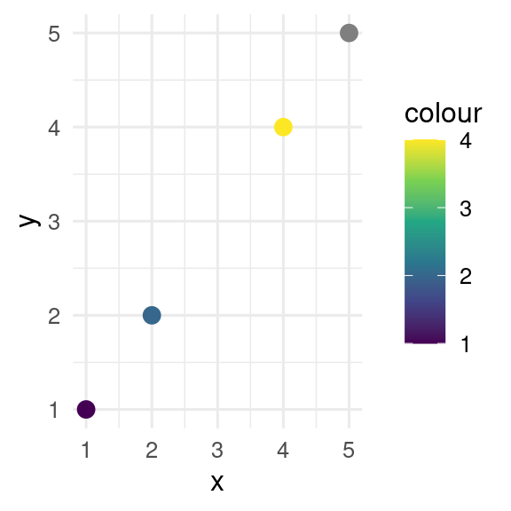
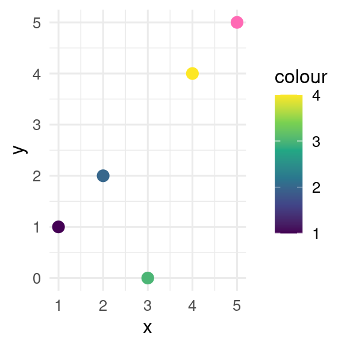

x <- c(0, 5, NA)
x[1] 0 5 NA

Many datasets have missing values. These could represent data that were not measured, perhaps because of instrument failure, or were impossible to measure, for example water temperature at 200m where the sea is only 100m deep.
Missing values in R are represented by NA.
x <- c(0, 5, NA)
x[1] 0 5 NAThis tutorial shows you how to cope with missing values in R, focusing on manipulating data with the tidyverse package, running statistical analyses, and making figures with ggplot2.
The penguins dataset from palmerpenguins is used as an example.
NA values can be detected with the function is.na() (NB lower case).
We could use this, for example, to find the number of missing values in a column of the penguins data.
When you import a text file (e.g., a csv file) any blank cells, or cells with “NA” will be treated as NA. If you have coded missing values as something else, you can use the na argument to read_delim()
# set blank cells, "NA" or "missing" to NA
read_delim(file = "my_file.csv", na = c("", "NA", "missing"))In readxl::read_excel(), the default for the na argument is just for blank cells to be made NA, but other values can be added in the same way as in read_delim().
We can remove rows with NA in particular columns from a data frame using drop_na(). For example, to remove rows in the penguins data set with an NA in the bill_length_mm or bill_depth_mm columns, we could use
penguins |>
drop_na(bill_length_mm, bill_depth_mm)# A tibble: 342 × 8
species island bill_length_mm bill_depth_mm flipper_l…¹ body_…² sex year
<fct> <fct> <dbl> <dbl> <int> <int> <fct> <int>
1 Adelie Torgersen 39.1 18.7 181 3750 male 2007
2 Adelie Torgersen 39.5 17.4 186 3800 fema… 2007
3 Adelie Torgersen 40.3 18 195 3250 fema… 2007
# … with 339 more rows, and abbreviated variable names ¹flipper_length_mm,
# ²body_mass_gAlternatively, we can use filter() and is.na(). This is most useful when removing NA is one of several arguments to filter.
# A tibble: 123 × 8
species island bill_length_mm bill_depth_mm flipper_leng…¹ body_…² sex year
<fct> <fct> <dbl> <dbl> <int> <int> <fct> <int>
1 Gentoo Biscoe 46.1 13.2 211 4500 fema… 2007
2 Gentoo Biscoe 50 16.3 230 5700 male 2007
3 Gentoo Biscoe 48.7 14.1 210 4450 fema… 2007
# … with 120 more rows, and abbreviated variable names ¹flipper_length_mm,
# ²body_mass_gYou might see some code using na.omit() to remove rows with missing values from a data frame. This can be dangerous as it will remove rows with an NA in any column, not just the columns you are interested in.
Sometimes you want to replace NA with another value. Perhaps you want to make a plot where NA values are labelled unknown, or you know that the NA values are actually zeros, or the NA are values below the detection limit of an instrument and you want to replace these with half the detection limit.
You can use tidyr::replace_na() to do this.
Here, the code replaces missing values for bill length with the mean value for bill length.
penguins |>
mutate(
bill_length_mm = replace_na(
data = bill_length_mm,
replace = mean(bill_length_mm, na.rm = TRUE))
)# A tibble: 344 × 8
species island bill_length_mm bill_depth_mm flipper_l…¹ body_…² sex year
<fct> <fct> <dbl> <dbl> <int> <int> <fct> <int>
1 Adelie Torgersen 39.1 18.7 181 3750 male 2007
2 Adelie Torgersen 39.5 17.4 186 3800 fema… 2007
3 Adelie Torgersen 40.3 18 195 3250 fema… 2007
# … with 341 more rows, and abbreviated variable names ¹flipper_length_mm,
# ²body_mass_gNA in factorsThe code in the previous section won’t work if we try to replace an NA in a factor.
penguins |>
mutate(sex = replace_na(sex, "missing")) |>
distinct(sex)Error in `mutate()`:
ℹ In argument: `sex = replace_na(sex, "missing")`.
Caused by error in `vec_assign()`:
! Can't convert from `replace` <character> to `data` <factor<8f119>> due to loss of generality.
• Locations: 1As the warning indicates, the problem is that “missing” is not one of the levels of the factor sex.
Instead we need to use the function forcats::fct_explicit_na() (the forcats package is part of tidyverse for manipulating factors).
penguins |>
mutate(sex = fct_explicit_na(sex, na_level = "missing")) |>
count(sex)Warning: There was 1 warning in `mutate()`.
ℹ In argument: `sex = fct_explicit_na(sex, na_level = "missing")`.
Caused by warning:
! `fct_explicit_na()` was deprecated in forcats 1.0.0.
ℹ Please use `fct_na_value_to_level()` instead.# A tibble: 3 × 2
sex n
<fct> <int>
1 female 165
2 male 168
3 missing 11NA with values from another vectorSometimes you have a vector with NA and you want to replace the missing values with values from a second vector. The coalesce() can do this.
Here, the first value of x is NA, so the first value of y is used. The second value of x is not NA, and so can be used. And so on.
Some data sets use a number to represent a missing value, for example -9999. Obviously, if you do any calculations with a data set containing -9999 as a missing value, the results could be seriously wrong. Instead we need to replace these values with NA. We can do this with dplyr::na_if().
x <- c(1, 7, -9999)
na_if(x, y = -9999)[1] 1 7 NAfilter()
dplyr::filter() returns rows where the condition is strictly TRUE. This is usually what you want: if we want to filter penguins with long bills from the penguins dataset we don’t want the birds with unknown bill length.
Occasionally we do want to keep the rows with NA. Perhaps we have a column of comments, many of which are NA, and we only want to remove rows where the non-NA values meet some criterion.
# A tibble: 11 × 8
species island bill_length_mm bill_depth_mm flipper_…¹ body_…² sex year
<fct> <fct> <dbl> <dbl> <int> <int> <fct> <int>
1 Adelie Torgersen NA NA NA NA <NA> 2007
2 Adelie Torgersen 34.1 18.1 193 3475 <NA> 2007
3 Adelie Torgersen 42 20.2 190 4250 <NA> 2007
4 Adelie Torgersen 37.8 17.1 186 3300 <NA> 2007
5 Adelie Torgersen 37.8 17.3 180 3700 <NA> 2007
6 Adelie Dream 37.5 18.9 179 2975 <NA> 2007
7 Gentoo Biscoe 44.5 14.3 216 4100 <NA> 2007
8 Gentoo Biscoe 46.2 14.4 214 4650 <NA> 2008
9 Gentoo Biscoe 47.3 13.8 216 4725 <NA> 2009
10 Gentoo Biscoe 44.5 15.7 217 4875 <NA> 2009
11 Gentoo Biscoe NA NA NA NA <NA> 2009
# … with abbreviated variable names ¹flipper_length_mm, ²body_mass_gHere the | means OR in Boolean logic.
if_else() and case_when()
Sometimes is it useful to set values to NA with if_else() (when there is a choice of two outcomes) or case_when() (when there is a choice of two or more outcomes).
All possible values returned by if_else() and case_when() need to be of the same type (character, numeric, integer, logical). If the types are inconsistent, an error is produced. This is useful as forcing consistency helps avoid unexpected behaviour.
x <- 0:2
case_when(
x == 0 ~ NA,
x == 1 ~ "One",
x == 2 ~ "Two"
)[1] NA "One" "Two"The problem occurs here because NA is treated as a logical vector, while the other values are characters. The solution is to use NA_character_ which is an NA with the correct type.
x <- 0:2
case_when(
x == 0 ~ NA_character_,
x == 1 ~ "One",
x == 2 ~ "Two"
)[1] NA "One" "Two"Other typed NA include NA_real_ for numeric values and NA_integer for integer values.
NA arithemeticWhat is five plus an unknown number? The answer is, of course, unknown.
5 + NA[1] NANA are contagious in calculations: if one value is NA the result is NA. This effects many descriptive statistics.
The solution is to use the na.rm argument to these functions to exclude the NA from the calculation.
NA in correlations and covariancesThe functions for calculating correlation, cor(), and covariance, cov(), work a little differently as these functions can work on two vectors or on a matrix or data frame. The use argument is used to control how NA are treated.
By default, if any values are NA in either vector, the result is also NA. If you want to find the correlation between two vectors without the NA, then use
cor(x = penguins$bill_length_mm,
y = penguins$bill_depth_mm,
use = "pairwise.complete.obs")[1] -0.2350529If you have a matrix (or data frame), and want to calculate a correlation matrix, then use = "complete.obs" will calculate this using just the rows that have no NA, and use = "pairwise.complete.obs" will calculate the correlation between each pair of variables using all complete pairs of observations on those variables.
penguins |>
select(bill_length_mm, bill_depth_mm, flipper_length_mm, body_mass_g) |>
cor(use = "pairwise.complete.obs") bill_length_mm bill_depth_mm flipper_length_mm body_mass_g
bill_length_mm 1.0000000 -0.2350529 0.6561813 0.5951098
bill_depth_mm -0.2350529 1.0000000 -0.5838512 -0.4719156
flipper_length_mm 0.6561813 -0.5838512 1.0000000 0.8712018
body_mass_g 0.5951098 -0.4719156 0.8712018 1.0000000By default regression models such as lm(), glm(), and lmer() remove any case that has an NA in either the response or predictors. This behaviour is controlled by the na.action argument. This is great if we are interested in the model coefficients, but it can cause problems if there are NA in the data and we want to add the residuals, fitted values, or predictions into the original data frame for plotting.
Error in `mutate()`:
ℹ In argument: `fit = fitted(mod)`.
Caused by error:
! `fit` must be size 344 or 1, not 342.The problem is that there are fewer observation in the model (which omitted the NA) than the original data frame (which still has them).
We can make this work by using na.action = na.exclude which will pad the fitted values with NA so that it is the same length as the original data.
mod <- lm(bill_length_mm ~ body_mass_g, data = penguins, na.action = na.exclude)
penguins |> mutate(fit = fitted(mod))# A tibble: 344 × 9
species island bill_length_mm bill_dept…¹ flipp…² body_…³ sex year fit
<fct> <fct> <dbl> <dbl> <int> <int> <fct> <int> <dbl>
1 Adelie Torgersen 39.1 18.7 181 3750 male 2007 42.1
2 Adelie Torgersen 39.5 17.4 186 3800 fema… 2007 42.3
3 Adelie Torgersen 40.3 18 195 3250 fema… 2007 40.1
# … with 341 more rows, and abbreviated variable names ¹bill_depth_mm,
# ²flipper_length_mm, ³body_mass_gWith na.exclude the NA are still excluded from the model fitting - most models do not allow NA values.
When comparing models, for example with anova(), all models need to have been fit to the same dataset. This can cause problems if NA have caused different numbers of observations to be removed.
mod2 <- lm(bill_length_mm ~ body_mass_g + sex, data = penguins, na.action = na.exclude)
anova(mod, mod2)Error in anova.lmlist(object, ...): models were not all fitted to the same size of datasetThe easiest solution is to remove rows with NA in any predictor before fitting any of the models.
As shown above, observations with missing values are omitted from the model. If a predictor has many missing values, it may be better to exclude the predictor from the model to avoid losing too many observations.
An alternative is to impute the missing data. This should be done with caution as it can bias the results, especially if a substantial proportion of the data are imputed. On the other hand, if missing data are not randomly distributed, omitting observations with missing data can also bias the results.
There are several ways that can be used to impute missing values.
The simplest is to replace a the missing value with the mean or median of the variable as shown in Section 21.1.4.
More complex methods use the multivariate relationship between predictors to estimate the missing values. Several R packages can help with this, e.g., mice. Yadav and Roychoudhury (2018) compare the performance of some popular methods.
ggplot2
By default, missing values in the x or y aesthetics are dropped by ggplot() with a warning, whereas missing values in the colour or fill aesthetics are shown in grey. This behaviour can be controlled with the na.value argument to the relevant scale_*_*() function.
#x or y NA
p <- tibble(
x = 1:5,
y = c(1, 2, NA, 4, 5),
colour = c(1, 2, 3, 4, NA)
) |>
ggplot(aes(x = x, y = y, colour = colour)) +
geom_point(size = 3)
pWarning: Removed 1 rows containing missing values (`geom_point()`).
# change defaults
p +
scale_y_continuous(na.value = 0) +
scale_colour_continuous(na.value = "hotpink")